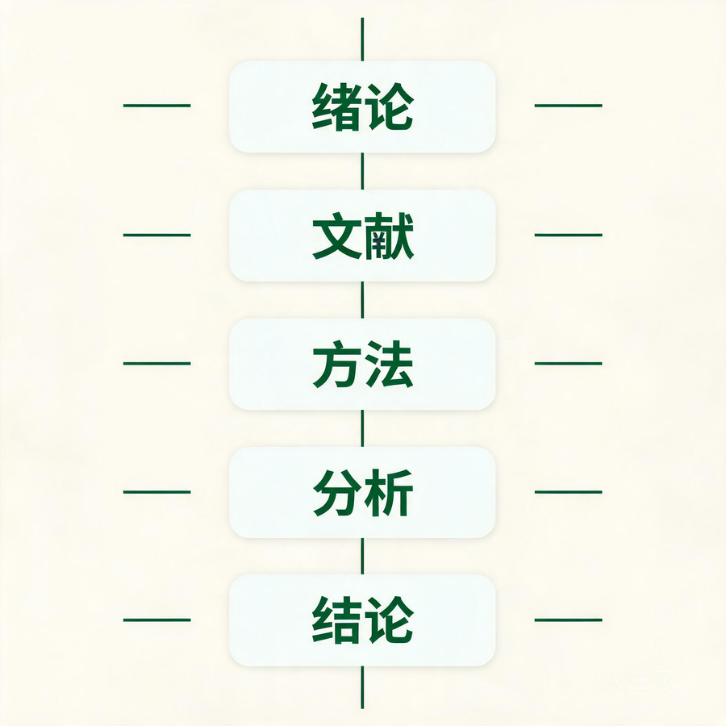
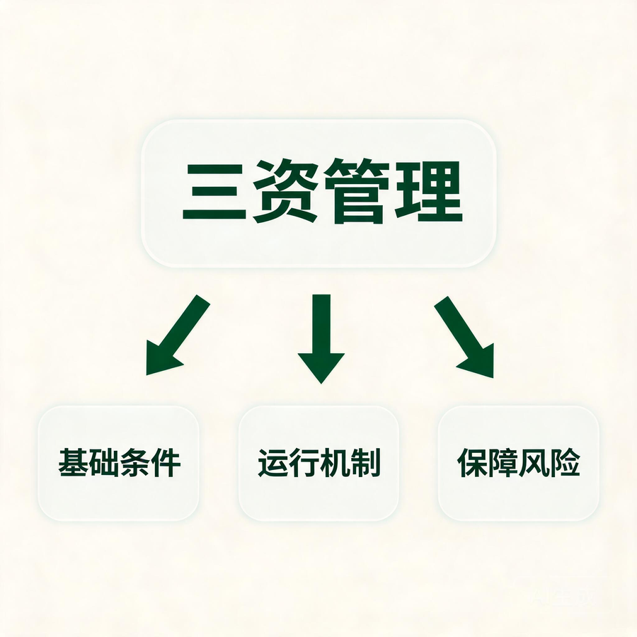

硕士论文写作要点详细大纲
基于《数字乡村建设背景下雅安市名山区农村集体“三资”管理问题及对策研究》的样本分析
本大纲供硕士研究生学习、选题、开题和论文写作使用。内容以袁云芬硕士论文为主要样本，同时提炼适用于公共管理、农村发展、社会治理、教育管理、经济管理等专业的通用写作方法。样本中的结构和方法可作参考，但不能机械照搬。学生应根据本专业培养方案、学校论文模板和导师要求调整章节设置。
一、论文整体框架与结构
1. 硕士论文的基本组成
一篇完整的硕士论文通常由前置部分、正文部分和后置部分组成。三个部分功能不同，不能只重视正文而忽略摘要、参考文献、附录等内容。
1.1 前置部分
（1）封面与题名页
- 论文题目应准确反映研究对象、研究内容和研究边界。
- 题目不宜过大、过空，也不宜塞入过多概念。
- 主标题应承担主要信息，副标题只在需要限定案例、地区或时间时使用。
- 学号、专业、研究方向、导师、培养单位和日期应按学校模板填写。
样本示例：
《数字乡村建设背景下雅安市名山区农村集体“三资”管理问题及对策研究》包含四项关键信息：
- 研究背景：数字乡村建设。
- 研究对象：农村集体“三资”管理。
- 研究任务：分析问题并提出对策。
- 研究场域：雅安市名山区。
这个题目边界较清楚，学生看到题目后，能够大致判断论文会研究什么、在哪里研究、准备完成什么任务。
（2）原创性声明和授权声明
- 使用学校统一文本，不得自行改写。
- 电子版和纸质版的签名、日期应符合学校要求。
- 提交前检查是否遗漏作者或导师签名。
（3）中文摘要
摘要应形成一篇高度压缩、相对独立的研究说明，通常包括：
- 研究背景：为什么要研究这个问题。
- 研究对象：研究谁、研究什么地区或组织。
- 研究问题：论文试图回答哪些核心问题。
- 研究方法：使用了什么材料和分析方法。
- 核心发现：研究发现了哪些主要现象、关系或机制。
- 主要结论或建议：论文最终得出什么结论。
- 研究价值：研究对理论或实践有什么具体贡献。
推荐写法：
- 第一段：背景、对象和问题。
- 第二段：方法、数据和主要发现。
- 第三段：结论、对策和贡献。
样本示例：
样本摘要交代了名山区这一案例，说明论文使用文献研究、实地调研、统计分析和扎根理论等方法，并概括出“三阶段演进、四类问题、四个对策维度”。这种摘要具有较完整的信息结构。
常见问题：
- 背景写得过长，研究发现只有一两句。
- 只介绍论文分为几章，没有给出实质性结论。
- 使用“取得了一定成果”“具有重要意义”等空泛表达。
- 摘要出现正文没有分析的数据、观点或概念。
- 方法只写名称，不交代样本、材料或研究对象。
（4）英文摘要
- 英文摘要应与中文摘要的信息、数字和结论保持一致。
- 专业术语应采用本学科常见译法，同一术语全文保持统一。
- 地名、组织名和政策名应核对官方译法。
- 不要逐字翻译中文长句，应按英文表达习惯重新组织句子。
- 完成后检查时态、单复数、冠词、专有名词大小写和标点。
（5）关键词
- 通常选取 3—5 个关键词，具体数量以学校要求为准。
- 优先选择研究对象、核心概念、理论视角、关键变量和研究场域。
- 避免使用“研究”“问题”“分析”“对策”等区分度较低的词。
样本关键词：雅安市名山区、数字乡村、农村集体“三资”。
（6）目录、图目录和表目录
- 目录标题必须与正文标题逐字一致。
- 标题层级不宜过多，一般控制在三级或四级。
- 图、表较多时，应单列图目录和表目录。
- 使用自动目录后仍要检查页码、缩进和断行。
1.2 正文部分
正文是论文的核心，常见结构包括：
- 绪论：提出问题。
- 概念与理论：建立分析工具。
- 研究设计或案例背景：说明如何研究、研究对象处于什么情境。
- 数据或材料分析：形成证据。
- 问题、机制或影响分析：解释证据。
- 对策、讨论或模型检验：回应研究问题。
- 结论与展望：概括答案并说明边界。
不同研究类型可以调整章节顺序：
- 定量实证论文通常采用“理论分析与研究假设—研究设计—实证结果—进一步分析—结论”。
- 质性案例论文通常采用“理论与分析框架—案例背景—资料分析—机制提炼—结论”。
- 问题对策型论文通常采用“现状—调研—问题—成因—对策—结论”。
- 政策评估论文通常采用“政策背景—评估框架—数据与方法—效果评估—问题解释—政策建议”。
1.3 后置部分
（1）参考文献
- 列出正文实际引用的文献，不应把未引用文献放入参考文献表充数。
- 正文引文序号与文后文献必须一一对应。
- 逐条核对作者、题名、来源、年份、卷期、页码、文献类型和 DOI。
（2）附录
可放置以下材料：
- 调查问卷。
- 访谈提纲。
- 变量测量题项。
- 补充回归表。
- 编码表。
- 过长的政策文本或指标体系。
- 正文不便完整展示但与研究可信度有关的材料。
样本把农户调查问卷以及区、镇、村三级访谈提纲放入附录，便于读者检查研究工具与正文分析是否一致。
（3）致谢
- 感谢对象和内容应真实、克制。
- 不宜写成个人经历长文。
- 不得出现与论文无关或过度私人化的内容。
（4）攻读学位期间成果
- 按学校要求列出论文、项目、获奖等成果。
- 区分已发表、已录用、在投和参与项目，不能模糊表述。
2. 样本论文的七章结构及功能
| 章节 | 核心任务 | 主要材料 | 应回答的问题 | 与下一章的关系 |
|---|---|---|---|---|
| 第一章 绪论 | 提出研究问题 | 政策、现实材料、文献 | 为什么研究、已有研究缺什么 | 为理论与研究设计确定方向 |
| 第二章 概念界定和理论基础 | 建立概念与理论工具 | 法律政策、经典文献、理论研究 | 研究对象是什么、如何解释 | 为问卷、访谈和问题分析提供维度 |
| 第三章 发展现状 | 描述案例背景与演进 | 统计资料、部门材料、案例事实 | 当地目前处于什么状态 | 为调研结果提供情境解释 |
| 第四章 实地调研分析 | 获取并分析一手证据 | 问卷、访谈、编码 | 现实中出现了什么现象 | 为问题和成因分析提供证据 |
| 第五章 问题及成因 | 归纳问题并解释原因 | 问卷结果、访谈材料、理论 | 存在什么问题、为什么出现 | 为对策设计确定靶点 |
| 第六章 对策 | 提出解决方案 | 问题清单、政策条件、案例经验 | 谁应当怎样解决问题 | 为结论概括实践价值 |
| 第七章 结论与展望 | 回答研究问题 | 前文全部分析结果 | 论文最终发现了什么 | 说明边界和后续研究方向 |
3. 论文的总体论证链条
论文不能只是若干章节并排放置，应形成连续的论证链：
现实背景 → 研究问题 → 文献缺口 → 理论视角 → 研究设计 → 数据与材料 → 研究发现 → 问题或机制 → 成因解释 → 对策或讨论 → 研究结论
3.1 每一环的基本要求
（1）现实背景必须指向具体矛盾
不能只写国家重视、行业发展迅速、社会意义重大。背景部分要说明：
- 现实中发生了什么变化。
- 哪些主体受到影响。
- 出现了什么具体矛盾。
- 这个矛盾为什么需要研究而不是简单依靠行政工作解决。
（2）研究问题必须能够由材料回答
研究问题不能超出数据和方法的能力范围。例如：
- 只有单地区访谈材料，不宜回答全国性因果问题。
- 只有横截面问卷，不宜轻易判断长期变化趋势。
- 只有描述统计，不宜声称变量之间存在因果关系。
（3）文献缺口必须导向研究设计
如果文献缺口是缺少农户视角，研究设计就应收集农户数据；如果文献缺口是缺少机制解释，就应采用能够分析机制的方法；如果文献缺口是缺少区域比较，就应设计比较案例。
（4）理论必须进入分析
理论不只是第二章的知识介绍，还应影响：
- 研究问题的提出。
- 问卷或访谈维度的设计。
- 数据解释。
- 问题分类。
- 结论的理论概括。
（5）结论必须由证据推出
任何重要结论都应能在前文找到数据、访谈、政策文本或案例事实支持。结论部分不能临时加入新材料。
4. 章节之间的对应关系
4.1 文献缺口与研究内容对应
示例：
- 文献缺少农户视角 → 问卷面向农户。
- 文献缺少基层执行过程 → 访谈乡镇和村级工作人员。
- 文献缺少特色产业地区研究 → 选择茶产业地区作为案例。
- 文献缺少系统性分析 → 同时分析基础、机制、保障和风险场景。
4.2 理论框架与研究工具对应
以样本为例：
- 内部控制理论可用于分析流程规范、风险控制、信息公开和监督落实。
- 委托代理理论可用于分析村民与管理者之间的信息不对称、监督和激励。
- 协同治理理论可用于分析区、镇、村、农户及其他主体之间的协作。
4.3 调研发现与问题分析对应
第四章出现的核心证据，应在第五章得到系统归纳。不能在第五章突然出现第四章未调查、未讨论的新问题。
4.4 问题、成因和对策对应
| 问题 | 可能成因 | 对策方向 |
|---|---|---|
| 山区网络不稳定、设备不足 | 地形约束、投资不足、运维机制薄弱 | 分区补齐设施、建立运维责任制 |
| 农户不会使用平台 | 老龄化、教育水平偏低、培训方式不合适 | 分层培训、简化界面、数字助老 |
| 部门数据不共享 | 数据标准不统一、职责边界不清 | 统一标准、建立共享机制 |
| 平台使用率低 | 功能与需求不匹配、宣传不足 | 需求调研、优化功能、改善传播 |
5. 论文篇幅和章节比例
具体字数以学校要求为准。一般应遵循以下原则：
- 绪论不能占比过高，避免大量政策和背景挤压核心分析。
- 概念与理论应够用，不追求面面俱到。
- 数据分析、问题解释或模型检验应是正文主体。
- 对策篇幅不能明显超过证据分析，否则容易形成“建议很多、依据很少”。
- 结论应精炼，不重复全文。
参考比例：
- 绪论：10%—15%。
- 概念、理论和文献：15%—20%。
- 研究设计、现状和数据分析：35%—45%。
- 问题、机制、讨论或对策：25%—35%。
- 结论与展望：5%—10%。
该比例只用于检查结构是否失衡，不是硬性标准。
二、各章节写作重点与常见问题
1. 论文题目
1.1 写作目标
用最少的文字说明研究对象、核心问题和研究边界，使读者能够预判论文内容。
1.2 题目的常见组成方式
- 背景 + 对象 + 问题。
- 理论视角 + 对象 + 机制。
- 核心变量 + 结果变量 + 研究场域。
- 政策或技术 + 影响效果 + 案例地区。
- 主标题 + 副标题。
1.3 题目检查标准
- 是否出现无法在正文中充分解释的大概念。
- 是否限定研究对象和场域。
- 是否与研究方法相匹配。
- 是否使用了过强的因果词。
- 是否存在词语重复。
- 是否超过学校规定字数。
1.4 正反示例
过宽：《数字乡村建设研究》
问题：对象、地区、内容和研究任务都不清楚。
较清楚：《数字乡村建设背景下雅安市名山区农村集体“三资”管理问题及对策研究》
可进一步聚焦：《数字监管平台如何改善农村集体“三资”监督参与——基于雅安市名山区的案例研究》
后一题更强调机制，适合研究材料能够支持“平台—信息透明—监督参与”分析的情况。
2. 摘要与关键词
2.1 摘要写作的六项内容
- 一句话说明研究背景。
- 明确研究对象和研究问题。
- 说明数据、样本和方法。
- 概括两至四项核心发现。
- 提炼研究结论或政策建议。
- 说明研究贡献或适用价值。
2.2 摘要中的方法应写到什么程度
不要只写“采用问卷调查法和访谈法”，可适当交代：
- 调查对象是谁。
- 有效样本多少。
- 访谈对象包括哪些层级。
- 使用了何种统计或编码方法。
样本可用信息：342 份有效问卷、42 名访谈对象、开放式编码、主轴编码、选择性编码和饱和度检验。
2.3 摘要中的发现应如何表达
- 按重要性排序，不按章节顺序罗列。
- 使用明确名词，避免“相关问题”“一定影响”。
- 能量化的发现可以保留最关键数字，但不必塞入过多比例。
- 结论与建议应区分，不能把建议当成研究发现。
2.4 摘要自查
- 删除摘要后，正文能否独立成立；只读摘要，读者能否理解研究全貌。
- 中文摘要和英文摘要中的样本量、年份、分类数量是否一致。
- 关键词是否真正出现在题目、摘要和正文核心位置。
3. 第一章：绪论
3.1 研究背景
3.1.1 推荐使用“漏斗式”结构
第一层：宏观背景
- 国家战略。
- 行业变化。
- 技术或制度变迁。
- 重大社会问题。
第二层：领域背景
- 本研究领域当前的发展状态。
- 政策要求与实践进展。
- 核心主体面临的新任务。
第三层：案例或对象背景
- 研究地区、组织或群体的具体情况。
- 已取得的成效。
- 出现的矛盾和限制。
第四层：研究问题
- 为什么已有治理或管理方式仍未解决问题。
- 论文准备回答什么。
3.1.2 样本示例
样本按照“乡村振兴和数字乡村政策—农村集体‘三资’管理数字化—名山区平台建设—网络、人才、农户能力和平台适配问题”的顺序逐步收缩，基本形成了从宏观到微观的背景链条。
3.1.3 常见问题
- 连续罗列政策文件，没有解释政策与研究问题的关系。
- 背景只有宏观意义，没有地方事实。
- 在背景中提前写完全部问题和对策，导致后文重复。
- 使用最新统计数据却不标来源。
- 把个人工作经历当成研究必要性。
3.2 研究意义
3.2.1 理论意义
理论意义可以从以下角度选择：
- 补充特定场景或地区的研究证据。
- 检验或拓展某一理论的适用边界。
- 连接过去相互分离的研究领域。
- 提出新的概念、分类、机制或分析框架。
- 使用新资料重新解释已有问题。
不要写成：“丰富相关理论”“为后续研究提供参考”，但不说明丰富了什么。
3.2.2 实践意义
实践意义应明确受益主体：
- 为政府部门完善政策提供何种依据。
- 为组织优化流程解决什么问题。
- 为某类群体改善参与或权益保护提供什么支持。
- 为同类地区提供哪些可迁移经验。
3.2.3 理论意义与实践意义的区别
- 理论意义回答“对知识有什么增量”。
- 实践意义回答“对现实工作有什么用途”。
- 两者不能只是更换“理论上”“实践中”两个开头。
3.3 文献综述
3.3.1 文献综述的任务
文献综述不是证明自己读过很多文献，而是完成五项工作：
- 界定研究领域。
- 概括已有研究的主要主题和观点。
- 比较不同研究的结论、方法和证据。
- 识别争议、空白和局限。
- 引出本文的研究问题和研究设计。
3.3.2 文献的组织方式
可以按以下方式组织：
- 按主题：产权界定、管理模式、风险防控、数字治理。
- 按理论：内部控制、委托代理、协同治理。
- 按方法：规范研究、案例研究、问卷研究、计量研究。
- 按结论：支持、质疑、中间观点。
- 按发展阶段：传统管理、信息化管理、数字化治理。
- 按主体：政府、村集体、农户、企业、社会组织。
样本文献综述按产权界定、管理模式、风险防控三个主题展开，优点是结构清楚。可继续加强的地方包括：增加研究方法比较，梳理国内外研究差异，说明不同观点之间的争议。
3.3.3 一段文献综述的基本结构
- 段首提出本组文献讨论的共同问题。
- 概括代表性观点。
- 比较观点或方法差异。
- 评价证据和局限。
- 说明这一组文献对本文的启示。
3.3.4 文献评述的四个层次
内容层面
- 哪些对象研究较多，哪些对象被忽视。
- 哪些变量或机制未得到解释。
理论层面
- 是否过度依赖单一理论。
- 理论是否适用于新的数字化或基层治理场景。
方法层面
- 是否以规范分析和单案例研究为主。
- 是否缺少多主体数据、长期数据或比较设计。
情境层面
- 是否忽视地区、产业、人口和组织差异。
- 结论能否直接迁移到本文案例。
3.3.5 常见问题
- 按“某某认为”逐篇排列，缺乏归纳。
- 只引用支持自己观点的文献。
- 文献过旧，未覆盖近年研究进展。
- 国内文献很多，国外文献只引用理论原典。
- 研究缺口仅写“相关研究较少”。
- 文献评述提出的缺口与本文实际研究内容不一致。
3.4 研究问题、研究目标与研究内容
3.4.1 中心研究问题
中心问题应尽量用一句话表达。
样本问题可概括为：数字乡村建设背景下，名山区农村集体“三资”管理取得了哪些成效，仍面临哪些障碍，这些障碍为何形成，应如何改进？
3.4.2 子问题
中心问题可以拆成四至五个子问题：
- 名山区农村集体“三资”管理经历了怎样的演进？
- 当前数字化管理取得了哪些实际成效？
- 农户和基层工作人员如何评价平台及管理现状？
- 主要问题及其形成原因是什么？
- 哪些对策具有现实可行性？
3.4.3 研究目标
研究目标应与问题对应，可使用“描述、识别、解释、评估、构建、提出”等动词。
3.4.4 研究内容
研究内容不是重复目录，而要说明每部分如何共同回答研究问题。
3.5 研究方法
3.5.1 文献研究法
应说明：
- 检索数据库。
- 检索词。
- 时间范围。
- 纳入和排除标准。
- 文献如何分类和分析。
3.5.2 问卷调查法
应说明：
- 调查总体与调查对象。
- 问卷题项来源。
- 预测试与修改过程。
- 抽样方法。
- 样本量依据。
- 发放与回收方式。
- 无效问卷判定标准。
- 信度、效度或其他质量检查。
3.5.3 访谈法
应说明：
- 为什么选择访谈。
- 访谈对象的选择标准。
- 访谈人数和层级构成。
- 访谈时间、地点和时长。
- 是否录音、如何转写。
- 如何匿名和保护隐私。
3.5.4 统计分析法
应明确具体分析，而不是只写“利用统计软件分析”：
- 描述统计。
- 交叉分析。
- 均值比较。
- 卡方检验。
- 回归分析。
- 稳健性检验。
- 异质性分析。
3.5.5 扎根理论或编码分析
应说明：
- 采用何种扎根理论路径。
- 开放式编码、主轴编码和选择性编码如何实施。
- 编码人员及分歧处理方式。
- 如何保留原始语句与概念之间的对应关系。
- 如何进行理论饱和度检验。
3.5.6 方法使用的常见错误
- 只列方法名称，不说明实际操作。
- 声称使用某种方法，正文却没有相应结果。
- 描述统计写成因果分析。
- 比例不同就写“显著差异”，但没有统计检验。
- 使用 G*Power 计算样本量，却不交代检验类型、效应量、显著性水平和统计功效。
- 以既有理论严格设计编码框架，同时声称采用完全归纳、无预设的扎根理论。
3.6 技术路线
技术路线应展示研究步骤和逻辑关系，而不是把目录放入方框。
推荐包括：
- 问题提出。
- 文献回顾。
- 概念和理论。
- 研究设计。
- 数据或材料收集。
- 数据处理和分析。
- 研究发现。
- 问题与机制解释。
- 结论与建议。
每个框之间的箭头应有明确含义，避免复杂装饰和交叉线条。
3.7 创新点
3.7.1 可成立的创新类型
- 研究对象创新：研究过去被忽视的群体、组织或地区。
- 数据创新：获得新的调查、访谈、档案或平台数据。
- 视角创新：用新的理论或主体视角分析旧问题。
- 方法创新：合理组合多种方法解决同一问题。
- 机制创新：发现过去未被解释的作用过程。
- 应用创新：把理论用于新的产业或治理场景。
3.7.2 创新点的表达方法
每一项创新应回答：过去怎么研究、本文有什么不同、这种不同带来了什么新认识。
3.7.3 常见问题
- 把“选择某地区”直接当成创新。
- 把常规问卷和访谈组合称为方法创新。
- 声称填补国内外空白，却没有系统文献证据。
- 创新点写了三项，结论中看不到相应成果。
3.8 研究不足
不足应具体说明对结论造成什么影响，例如：
- 单案例研究限制了结论的外部推广。
- 横截面数据难以识别长期变化。
- 问卷主要测量主观感知，缺少客观绩效数据。
- 访谈对象集中于管理者，市场主体参与不足。
- 对策尚未通过试点检验。
不足不能写成“时间有限、能力不足”等泛泛表述，也不能把可以在提交前修正的格式错误当成研究局限。
4. 第二章：概念界定和理论基础
4.1 概念界定
4.1.1 哪些概念需要界定
- 题目中的核心概念。
- 学界存在多种定义的概念。
- 容易与相近概念混淆的概念。
- 需要进一步测量或编码的概念。
- 具有政策或法律含义的概念。
4.1.2 概念界定的推荐步骤
- 说明概念来源和发展。
- 比较权威政策、经典文献和近年研究的定义。
- 指出不同定义的共同点和差异。
- 选择本文采用的定义。
- 说明该定义如何进入后文分析。
4.1.3 样本示例
样本界定数字乡村、农村集体经济和农村集体“三资”，并将“三资”进一步分为资金、资产和资源。这种界定为后文问卷题项、平台功能和管理问题分类提供了基础。
4.1.4 常见问题
- 把概念界定写成政策发展史。
- 罗列多个定义后不说明本文采用哪一个。
- 定义过宽，无法形成测量指标。
- 同一概念在不同章节中含义发生变化。
- 界定了很多概念，后文没有使用。
4.2 理论基础
4.2.1 选择理论的标准
- 理论能够解释研究问题，而不是仅与题目关键词有关。
- 理论核心概念能够转化为分析维度。
- 理论有足够文献支持。
- 多个理论之间能够分工或互补。
- 理论数量与论文篇幅、研究能力相匹配。
4.2.2 理论部分的写作结构
- 理论来源和代表学者。
- 核心概念和基本命题。
- 理论适用条件。
- 理论与研究对象的关系。
- 本文准备如何使用该理论。
4.2.3 样本中的理论分工
| 理论 | 核心关注 | 可对应的研究内容 |
|---|---|---|
| 内部控制理论 | 流程、风险、信息、监督 | 资金审批、合同管理、信息公开、风险预警 |
| 委托代理理论 | 信息不对称、监督、激励 | 村民知情权、管理者行为、平台透明度、考核机制 |
| 协同治理理论 | 多主体合作、资源整合 | 区镇村联动、部门共享、农户参与、市场主体协作 |
4.2.4 建立分析框架
理论部分结束时，最好形成文字或图示框架，说明：
- 核心分析维度是什么。
- 各维度之间是什么关系。
- 每个维度将使用什么材料检验或说明。
4.2.5 常见问题
- 理论介绍很长，但后文不再出现。
- 三个理论分别介绍，却没有构成统一框架。
- 用理论给材料贴标签，没有真正解释因果或机制。
- 理论与研究方法冲突，且未作说明。
- 理论名称使用错误或引用非经典来源。
5. 第三章：研究对象、案例背景与现状
5.1 本章的功能
本章不是一般情况介绍，而是回答：研究对象为何形成当前状态，哪些环境因素会影响后文调研结果。
5.2 内容选择原则
每一项背景材料都应与研究问题存在关系：
- 自然地理：是否影响基础设施、资源分布或公共服务。
- 人口结构：是否影响劳动力、参与能力或技术使用。
- 经济结构：是否影响财政能力、产业基础或组织资源。
- 制度沿革：是否影响权责关系和管理模式。
- 技术基础：是否影响平台建设与使用。
- 特色产业：是否影响资产、资源和资金构成。
5.3 样本中的可借鉴做法
- 介绍丘陵和山区分布，用于解释网络覆盖差异。
- 介绍老龄化和教育水平，用于解释农户数字素养。
- 介绍茶产业和茶山资源，用于说明平台场景适配。
- 把“三资”管理划分为粗放管理、试点盘活、数字监管与制度规范三个阶段，增强历史解释。
5.4 现状分析的推荐层次
- 基本环境。
- 发展历程。
- 当前制度和运行机制。
- 已取得成效。
- 初步局限。
其中“初步局限”只作过渡，不应替代后文基于调研证据的系统问题分析。
5.5 数据写作规范
每个关键数字至少说明：
- 时间。
- 统计对象。
- 指标口径。
- 数据来源。
- 是否由作者计算。
示例：不能只写“平台访问量超过 5 万人次”，还应说明统计时间、平台后台数据来源以及“人次”是否包含重复访问。
5.6 常见问题
- 地区概况篇幅过长，像地方志或政府工作报告。
- 大量数据没有来源。
- 把宣传材料中的成效直接当成客观结论。
- 现状、问题和成因边界不清。
- 只写成功经验，不写运行限制。
- 本章数据与后文问卷、访谈数据矛盾。
6. 第四章：研究设计与证据分析
6.1 问卷研究
6.1.1 调查对象
说明为什么由这一群体回答问题，他们掌握什么信息，不能掌握什么信息。
样本让农户回答知晓度、参与情况、平台使用和意见建议，符合农户作为集体成员和平台使用者的身份。政策制定、资金投入和技术运维等问题则更适合询问管理部门。
6.1.2 问卷维度
问卷维度应来自研究问题、理论框架和文献：
- 基本特征。
- 核心概念认知。
- 管理现状感知。
- 参与情况。
- 技术使用。
- 满意度或评价。
- 问题和建议。
6.1.3 题项设计
- 一个题项尽量只测量一个意思。
- 避免诱导性、双重否定和专业术语。
- 选项应互斥且尽量穷尽。
- 多选题必须注明可多选。
- 跳答题应标明回答条件。
- 量表题应统一方向，反向题需谨慎使用。
6.1.4 预测试
预测试应检查：
- 受访者是否理解题目。
- 选项是否遗漏。
- 问卷时长是否合理。
- 敏感问题是否引发拒答。
- 量表是否具有初步信度。
6.1.5 抽样设计
需说明：
- 总体范围。
- 抽样框来源。
- 分层变量。
- 村庄或组织如何抽取。
- 个体如何抽取。
- 最终样本分布是否接近总体。
样本使用“集体经济规模 × 地理类型”的交叉分层，能够覆盖不同经济水平和地形条件。这种设计比单纯便利抽样更有说服力，但仍需说明各层的实际抽取名单和抽取程序。
6.1.6 样本量
- 说明采用的计算公式或软件。
- 交代总体规模、置信水平、允许误差、效应量或统计功效。
- 考虑无效问卷率和失访率。
- 不要只给出“软件计算得到 380 份”。
6.1.7 数据清洗
明确无效问卷标准，例如：
- 答题时间明显过短。
- 大量缺失。
- 逻辑矛盾。
- 所有量表题选择同一选项。
- 超出调查对象范围。
- 重复提交。
6.1.8 统计分析
描述统计
用于说明人数、比例、均值、标准差和分布。
差异检验
只有使用适当的统计检验后，才能写“显著差异”。例如：
- 分类变量可考虑卡方检验。
- 两组均值比较可考虑 t 检验。
- 多组均值比较可考虑方差分析。
关系和影响分析
若要讨论变量关系或影响，可根据数据类型采用相关、回归、结构方程等方法，并处理控制变量、内生性和稳健性问题。
6.1.9 结果解释
结果分析不能只复述表格。每段应包括：
- 最主要的数字或差异。
- 这一结果说明什么。
- 与理论或文献是否一致。
- 对后文问题分析有什么启示。
6.2 访谈研究
6.2.1 访谈对象设计
按照研究问题选择信息掌握者，而不是只访谈容易联系的人。
样本访谈包括：
- 区级部门工作人员 6 人：掌握政策、资金、平台和部门协同情况。
- 乡镇管理人员 13 人：掌握政策执行、审核和村级指导情况。
- 村干部 23 人：掌握数据录入、平台操作和农户反馈情况。
这种三级结构有利于比较政策制定、执行和基层落地之间的差异。
6.2.2 访谈提纲
- 由一般问题逐步进入核心问题。
- 先询问事实，再询问评价和原因。
- 允许追问具体时间、事件、过程和例子。
- 不把预设答案写进问题。
- 不同主体可使用不同提纲，但核心问题应能比较。
6.2.3 访谈实施记录
建议建立访谈台账：
| 编号 | 身份类型 | 日期 | 时长 | 方式 | 是否录音 | 转写状态 | 备注 |
|---|
6.2.4 资料编码
开放式编码
从原始语句中提取概念，保留语境，不急于套入结论。
主轴编码
比较概念之间的条件、行动、结果和相互关系，形成主范畴。
选择性编码
围绕核心范畴整合其他范畴，形成解释主线或理论模型。
饱和度检验
预留部分材料进行检验，观察是否仍产生新概念和新关系。不能只写“达到饱和”，应说明检验材料数量和判断依据。
6.2.5 编码结果的呈现
至少保留以下对应关系：
原始语句 → 初始概念 → 主范畴 → 核心范畴 → 理论解释
编码表中的编号、名称和层级必须前后一致。样本的主轴编码表和选择性编码表中，B3、B4 的对应关系出现错位，这类错误会削弱编码过程的可信度。
6.3 混合研究或多来源证据
同时使用问卷和访谈时，要说明两类材料如何配合：
- 问卷发现问题分布，访谈解释形成原因。
- 问卷反映农户感知，访谈反映管理者执行过程。
- 政策文本说明正式制度，访谈说明实际执行。
- 平台数据提供客观行为，问卷提供主观评价。
不能把不同材料简单放在两个小节中而不进行相互验证。
6.4 研究结果中的常见问题
- 问卷题目与正文统计项目不一致。
- 多选题比例计算口径不清楚。
- 把相关关系解释为因果关系。
- 访谈原话过少，结论主要来自作者判断。
- 访谈原话过多，没有提炼和分析。
- 问卷与访谈结论冲突，却不解释原因。
- 图表编号重复或正文引用错误。
- 使用“绝大多数”“明显提升”但没有数据支持。
7. 第五章：问题与成因分析
7.1 问题分析的基本结构
每个问题建议写成四个层次：
- 问题是什么。
- 具体表现是什么。
- 证据是什么。
- 造成什么影响。
示例：
问题：农户数字参与不足。
- 表现：平台使用率低、线上参与决策比例低、部分农户看不懂公示内容。
- 证据：样本中仅 26.0% 的农户使用过数字技术了解或参与“三资”管理，81.6% 的农户未参与相关决策。
- 影响：农户难以充分行使知情权、参与权和监督权，平台容易停留在信息发布层面。
7.2 问题分类的标准
问题分类应满足：
- 同一层级。
- 相互区分。
- 尽量穷尽。
- 与理论或研究框架对应。
- 能够由证据支持。
样本将问题分为基础支撑、管理机制、政策资源、风险与场景四类，形成“基础—机制—保障—深化”的层次。
7.3 成因分析
成因必须比问题深入一层，可从以下方面分析：
- 制度设计。
- 权责关系。
- 资源配置。
- 主体能力。
- 激励约束。
- 技术条件。
- 组织文化。
- 地域和人口结构。
- 历史路径依赖。
7.3.1 区分表现、问题和原因
| 层次 | 示例 |
|---|---|
| 表现 | 平台信息更新慢 |
| 问题 | 信息公开机制不健全 |
| 原因 | 更新时限、责任主体和问责规则不明确 |
| 深层条件 | 部门协同不足、基层人员负担过重 |
7.3.2 理论如何参与成因解释
- 内部控制理论：解释流程、监督、信息沟通和风险控制为何失效。
- 委托代理理论：解释信息不对称、监督不足和激励缺位。
- 协同治理理论：解释部门分割、主体参与不足和资源整合困难。
7.4 常见问题
- 先凭经验确定问题，再选择性引用数据。
- 问题和原因只是更换词语。
- 一个事实同时出现在多个问题下，分类重复。
- 使用个别访谈原话推断整个地区。
- 问题标题过大，正文证据只能支持其中一部分。
- 第五章出现第四章未调查的新问题。
- 只分析客观条件，不分析制度和主体行为。
8. 第六章：对策建议
8.1 对策的基本要求
每项对策尽量包含六个要素：
- 行动主体：谁来做。
- 对策目标：解决什么问题。
- 具体措施：做什么。
- 实施步骤：怎么做。
- 支撑条件：需要哪些制度、资金、人员和技术。
- 评价标准：如何判断是否有效。
8.2 问题与对策逐项对应
| 问题 | 对策 | 可能主体 | 评价指标举例 |
|---|---|---|---|
| 山区网络不稳定 | 分区补齐网络和设备 | 网信、通信运营商、乡镇 | 网络可用率、故障响应时间 |
| 基层人员能力不足 | 专业培训与技术支持 | 农业农村部门、乡镇 | 培训覆盖率、录入错误率 |
| 农户不会使用平台 | 分层培训和数字助老 | 村级组织、志愿者 | 独立查询率、平台使用率 |
| 信息公开不及时 | 明确公开目录和时限 | 乡镇、村集体 | 按时公开率、信息完整率 |
| 部门数据不共享 | 统一标准和接口 | 区政府及相关部门 | 数据共享项数、重复录入率 |
8.3 对策如何体现地方和行业特点
样本研究地区以茶产业为特色，因此对策不应停留在一般平台优化，还可以围绕茶山资源登记、公开流转、合同履约、收益分配和智慧农业数据衔接设计场景。这类建议比“加强数字化建设”更具体。
8.4 对策的证据来源
对策可以来自：
- 本文调研发现。
- 受访者建议。
- 现行政策要求。
- 同类地区经验。
- 理论推导。
- 成本与可行性分析。
提出金额、比例、人员配置或完成时限时，应说明依据。不能为了显得具体而随意设置数字。
8.5 对策写作的常见问题
- 使用“加强、完善、提高、健全”，后面没有具体动作。
- 对策适用于任何地区，没有案例特点。
- 只写政府应当做什么，忽视村集体、农户、企业等主体。
- 对策超出地方政府权限或资源能力。
- 没有分析实施成本和阻力。
- 对策数量很多，却没有优先顺序。
- 建议与前文问题不对应。
- 把技术升级当成所有问题的解决方案。
9. 第七章：结论与展望
9.1 研究结论
结论应逐项回答研究问题，而不是再次介绍论文结构。
可按以下顺序组织：
- 对研究对象现状或演进的结论。
- 对核心问题或变量关系的结论。
- 对形成机制或成因的结论。
- 对理论解释或分析框架的结论。
- 对实践改进方向的结论。
样本结论概括了三阶段演进、四类问题、四维对策，以及技术、理论和地域条件的结合，基本与正文主线对应。
9.2 理论贡献与实践启示
若学校要求单列，可进一步说明：
- 哪些发现补充了已有文献。
- 理论在本案例中得到什么修正或拓展。
- 哪些实践经验可以迁移，哪些只能适用于特定地区。
9.3 研究不足
不足应与方法和数据直接相关，并说明可能影响：
- 样本代表性。
- 因果识别。
- 结论推广。
- 测量准确性。
- 对策验证。
9.4 研究展望
展望应由不足自然推出：
- 单案例局限 → 开展跨区域比较。
- 横截面数据局限 → 开展长期跟踪。
- 主观感知较多 → 增加平台日志和客观绩效数据。
- 未检验对策效果 → 开展试点和实施评估。
- 主体范围有限 → 增加企业、社会组织和技术服务商视角。
9.5 常见问题
- 结论只是摘要的重复。
- 按章节写“第一章做了什么”。
- 加入正文未分析的新数据。
- 把对策再次完整复制一遍。
- 展望写成“未来应继续深入研究”，没有具体方向。
- 回避真正的研究局限。
三、核心逻辑与论证思路构建
1. 建立研究问题树
1.1 中心问题
中心问题决定论文的总体方向，应具体、可研究、可回答。
1.2 描述性子问题
- 研究对象目前是什么状态。
- 经历了怎样的变化。
- 不同主体如何感知这一状态。
1.3 解释性子问题
- 为什么出现这些问题。
- 哪些条件推动或限制变化。
- 主体之间如何互动。
1.4 评价性子问题
- 某项政策、平台或措施是否有效。
- 效果体现在哪些方面。
- 对不同群体是否存在差异。
1.5 应用性子问题
- 哪些改进措施具有可行性。
- 谁负责实施。
- 如何评价实施结果。
2. 建立“概念—维度—指标—材料”链条
| 概念 | 分析维度 | 可观察指标 | 证据材料 |
|---|---|---|---|
| 数字化基础支撑 | 网络、设备、人才、素养 | 覆盖率、设备数量、培训次数、平台使用能力 | 统计资料、问卷、访谈 |
| 信息透明 | 公开内容、频率、可理解性 | 公开完整率、更新时限、农户理解度 | 平台资料、问卷、访谈 |
| 监督参与 | 查询、反馈、投票、投诉 | 使用率、参与率、问题处置率 | 平台日志、问卷、部门数据 |
| 协同治理 | 部门共享、区镇村联动 | 共享数据项、协同流程、反馈时长 | 政策文本、访谈、工作记录 |
这条链可以检查抽象概念是否真正转化为可分析内容。
3. 建立“主张—证据—解释”段落结构
3.1 主张
段首先提出一个明确判断，不要同时包含多个中心。
3.2 证据
可使用：
- 调查数据。
- 回归结果。
- 访谈原话。
- 案例事件。
- 政策条文。
- 统计公报。
- 文献结论。
3.3 解释
说明证据为什么支持主张，并使用理论、机制或情境进行解释。
3.4 限定
说明结论适用于什么对象、时间和条件，避免过度推广。
3.5 示例
主张：农户数字参与不足是平台监督功能未充分发挥的重要原因。
证据：样本中仅 26.0% 的农户使用过数字技术了解或参与“三资”管理，81.6% 的农户未参与相关决策；访谈还反映部分老年农户不会操作平台。
解释：农户数字素养不足、平台操作复杂和公示内容专业化，增加了信息获取成本。从委托代理角度看，委托人难以获得和理解信息，监督约束便难以形成。
限定：该结论主要反映名山区受访农户的情况，能否推广到数字基础和人口结构不同的地区，还需比较研究。
4. 建立证据三角验证
同一结论尽量由两种以上材料支持：
- 问卷比例 + 访谈原话。
- 政策规定 + 实际执行记录。
- 主观评价 + 客观平台数据。
- 不同层级受访者的相互印证。
- 本地材料 + 同类地区比较。
若不同材料不一致，不应只保留支持作者观点的部分，而要解释差异可能来自主体立场、时间、指标口径或执行层级。
5. 区分描述、解释和规范建议
5.1 描述
回答“是什么”，例如平台使用率、信息公开情况、农户参与比例。
5.2 解释
回答“为什么”，例如地形、人员能力、制度规则和激励机制如何导致使用率低。
5.3 规范建议
回答“应该怎样”，例如优化界面、分层培训、建立公开时限和跨部门共享。
论文常见问题是从描述直接跳到建议，中间缺少成因和机制解释。
6. 防止循环论证
循环论证示例：平台使用率低，是因为农户不愿使用；农户不愿使用，是因为平台使用率低。
应继续寻找可观察原因：
- 不会操作。
- 不知道入口。
- 网络条件差。
- 公示内容看不懂。
- 平台缺少农户需要的功能。
- 线下渠道已经能够满足需求。
7. 建立问题、成因和对策矩阵
建议在写作过程中维护一张总表：
| 编号 | 核心证据 | 问题 | 成因 | 理论解释 | 对策 | 正文位置 |
|---|---|---|---|---|---|---|
| P1 | 山区网络卡顿、附件加载困难 | 基础设施区域不均衡 | 地形复杂、投入不足 | 内部环境支撑不足 | 分区改造、运维协议 | 4.1、5.1、6.1 |
| P2 | 农户不会操作、使用率低 | 数字素养不足 | 老龄化、培训不适配 | 信息不对称持续 | 分层培训、助老界面 | 4.1、5.1、6.1 |
| P3 | 部门数据不互通 | 信息共享不足 | 标准和职责不清 | 协同机制薄弱 | 统一接口与共享规则 | 4.2、5.2、6.2 |
8. 全文一致性检查
8.1 概念一致
- 同一概念是否使用同一名称。
- “数字化管理”“数字监管”“数字治理”是否区分清楚。
- 核心范畴和子范畴是否前后一致。
8.2 数字一致
- 问卷发放、回收和有效数量。
- 访谈人数及构成。
- 百分比与人数能否相互换算。
- 年份、地区数量、样本分组。
8.3 图表一致
- 图表编号是否连续。
- 正文写“图”还是“表”。
- 图表标题与内容是否一致。
- 图表数据与正文描述是否一致。
8.4 观点一致
样本中第三章称平台具有投诉举报功能，第五章又称平台未设置投诉举报模块。此类矛盾必须通过核查平台版本、调查时间或功能范围加以解释，不能同时保留。
8.5 编码一致
主轴编码、选择性编码、理论模型和问题分类中的编号及名称应保持一致。样本中 B3、B4 前后错位，属于定稿时必须修正的技术性错误。
四、选题确定与研究方向深化
1. 选题的来源
1.1 理论来源
- 经典理论在新情境中是否仍然适用。
- 不同理论对同一现象是否有冲突解释。
- 已有研究是否缺少作用机制或边界条件。
1.2 现实来源
- 政策执行中的难点。
- 组织管理中的反复问题。
- 技术应用带来的新矛盾。
- 不同群体之间的利益冲突。
- 行业转型或制度改革。
1.3 文献来源
- 文献中反复出现但未解决的争议。
- 研究对象、数据或方法上的空白。
- 不同研究结论不一致。
- 已有结论缺少新的现实验证。
1.4 数据来源
- 能够获得的调查数据。
- 行政记录。
- 企业或平台数据。
- 档案和政策文本。
- 适合开展访谈的案例对象。
2. 选题的五项评估标准
2.1 问题性
是否存在需要解释的矛盾，而不只是一个宽泛主题。
2.2 价值性
能否形成知识增量或解决现实问题。
2.3 可行性
数据、时间、经费、权限和研究能力是否允许。
2.4 边界性
对象、地区、时间和内容是否清楚。
2.5 规范性
是否涉及无法获得授权的敏感数据，是否能够符合研究伦理。
3. 从大主题缩小为论文题目
3.1 第一步：确定领域
例如：数字乡村。
3.2 第二步：确定对象
例如：农村集体“三资”管理。
3.3 第三步：确定核心问题
例如：信息透明、监督参与、平台使用、跨部门协同或风险防控。
3.4 第四步：确定场域
例如：雅安市名山区。
3.5 第五步：确定研究任务
例如：现状研究、影响评估、机制分析、问题对策或比较研究。
3.6 题目递进示例
- 《数字乡村研究》：范围过大。
- 《数字乡村背景下农村治理研究》：仍然较宽。
- 《数字乡村背景下农村集体“三资”管理研究》：对象明确，但问题不清。
- 《数字乡村建设背景下雅安市名山区农村集体“三资”管理问题及对策研究》：场域和任务明确。
- 《数字监管平台对农户“三资”监督参与的影响机制研究——以雅安市名山区为例》：进一步聚焦具体关系和机制。
4. 判断研究对象是否具有代表性或典型性
可以从以下方面论证案例选择：
- 典型案例：具有同类地区普遍特征。
- 关键案例：有助于检验理论成立条件。
- 极端案例：某一现象表现特别突出。
- 改革先行案例：较早采用新制度或新技术。
- 对比案例：两个地区在关键条件上不同。
- 便利案例：容易获取资料，但必须承认代表性限制。
样本选择名山区，可从山区地形、茶产业特色、数字平台建设和农村人口结构等方面论证其典型性与特殊性。
5. 从“研究较少”深化为真正的研究缺口
5.1 对象缺口
已有研究关注政府和村集体，较少关注农户或市场主体。
5.2 理论缺口
已有研究说明技术有效，但没有解释技术通过何种机制发挥作用。
5.3 方法缺口
已有研究以规范分析为主，缺少问卷、访谈或平台行为数据。
5.4 情境缺口
已有研究多关注平原和经济发达地区，对山区、特色产业地区解释不足。
5.5 结论冲突
部分研究认为数字平台提升参与，另一些研究发现平台使用率低，需要分析差异条件。
6. 确定研究边界
至少明确四类边界：
- 空间边界：研究哪个地区或组织。
- 时间边界：分析哪个阶段的数据。
- 对象边界：研究哪些主体。
- 内容边界：重点研究资金、资产、资源中的哪些环节。
边界清楚并不会削弱论文，反而有助于提高结论可信度。
7. 从描述性研究深化为解释性研究
7.1 描述性方向
研究平台建设现状、农户使用情况和管理问题。
7.2 解释性方向
研究数字素养、平台易用性、信息透明度如何影响农户参与。
7.3 比较性方向
比较山区村与平原村、经济强村与薄弱村的差异。
7.4 评估性方向
比较平台建设前后投诉、审批时长、信息公开和群众满意度变化。
7.5 机制性方向
分析数字平台如何通过降低信息不对称、强化流程留痕和改善部门协同影响治理绩效。
8. 选题可行性检查
- 能否进入研究现场。
- 能否联系关键受访者。
- 能否获得总体名单或抽样框。
- 是否有足够样本。
- 数据是否允许公开和使用。
- 是否掌握所需统计或质性分析方法。
- 研究周期是否足够。
- 题目是否依赖尚未实施的政策或尚未开放的数据。
9. 研究方向深化示例
以样本主题为基础，可以形成不同层次的研究方向：
9.1 平台使用方向
数字素养、感知易用性和信任如何影响农户平台使用。
9.2 监督治理方向
数字公开是否改善农户知情权和监督参与。
9.3 组织协同方向
区、镇、村三级职责配置如何影响平台运行效果。
9.4 产业融合方向
“三资”平台如何与茶山流转、智慧农业和农村电商衔接。
9.5 风险治理方向
数据留痕、异常预警和权限管理如何降低集体资产管理风险。
9.6 比较研究方向
不同地形、产业结构或财政能力地区的数字化转型路径有何差异。
五、其他关键注意事项
1. 文献检索与管理
1.1 检索准备
- 拆分中文和英文关键词。
- 准备同义词、上位词和下位词。
- 确定数据库和时间范围。
- 记录检索式和检索日期。
1.2 文献筛选
- 题名初筛。
- 摘要复筛。
- 全文确认。
- 排除重复、无关和质量过低文献。
1.3 文献阅读卡片
建议记录：
| 项目 | 内容 |
|---|---|
| 基本信息 | 作者、年份、题目、来源 |
| 研究问题 | 论文回答什么问题 |
| 理论 | 使用什么理论 |
| 数据与方法 | 样本、变量、案例、分析方法 |
| 核心结论 | 主要发现 |
| 局限 | 作者承认或读者发现的不足 |
| 与本文关系 | 支持、冲突、补充或方法借鉴 |
1.4 文献管理工具
可以使用 EndNote、NoteExpress、Zotero 等工具，但必须人工检查导出格式。
2. 数据管理与可复核性
2.1 建立数据目录
- 原始数据。
- 清洗数据。
- 分析数据。
- 代码或语法文件。
- 图表输出。
- 数据说明文档。
2.2 保存处理记录
记录：
- 缺失值处理。
- 异常值处理。
- 变量编码。
- 样本剔除。
- 合并数据。
- 统计口径调整。
2.3 质性材料管理
- 访谈录音。
- 转写文本。
- 匿名编号。
- 编码表。
- 备忘录。
- 饱和度检验材料。
3. 研究伦理
- 向参与者说明研究目的和使用范围。
- 明确自愿参与和退出权利。
- 对个人身份和敏感信息匿名处理。
- 妥善保存录音、问卷和联系方式。
- 引用访谈原话时避免暴露身份。
- 未经授权不得公开内部文件和平台数据。
- 不得虚构、修改或选择性删除不利材料。
4. 图表规范
4.1 图表基本要素
- 编号。
- 标题。
- 单位。
- 注释。
- 数据来源。
- 必要的变量或符号说明。
4.2 图表使用原则
- 图适合展示趋势、结构和关系。
- 表适合展示准确数值和分类信息。
- 图表内容不要与正文大段重复。
- 正文应解释最重要发现，而不是说“见图表”。
4.3 图表常见错误
- 图表编号重复。
- 正文称“图”，实际为表。
- 百分比合计不为 100%，却不解释多选或四舍五入。
- 表中小数位不统一。
- 数据来源写“作者整理”，却不说明原始来源。
- 图中文字过小、颜色难以区分。
5. 学术语言
5.1 基本要求
- 准确：概念和数字不能含糊。
- 简洁：删除重复背景和空泛判断。
- 客观：区分事实、分析和建议。
- 克制：结论不超过证据支持范围。
- 连贯：段落之间有清楚过渡。
5.2 少用的表达
- “随着……不断发展”连续重复。
- “具有十分重要的理论意义和现实意义”。
- “通过分析可以看出”但不说明分析结果。
- “极大地提高”“显著改善”但没有数据。
- “相关部门”“有关人员”但不明确主体。
5.3 数字和术语表达
- 同一指标统一小数位。
- 百分数、人数和样本量能够对应。
- 首次出现的英文缩写应给出全称。
- 专业术语首次出现时可作简要解释。
- 同一主体不要在不同章节中反复更换名称。
6. 引用与参考文献
6.1 正文引用
- 直接引用应标明出处，必要时注明页码。
- 间接转述同样需要引用。
- 政策、法律和统计数据应注明发布机关与来源。
- 二手引用应尽量回到原始文献。
6.2 参考文献核对
逐项检查：
- 作者姓名。
- 文献题名。
- 期刊或出版社。
- 年份。
- 卷期。
- 起止页码。
- 文献类型。
- DOI 或网络地址。
样本参考文献中可见页码粘连、字符串联和格式不统一等问题，说明文献管理软件导出后仍需逐条人工复核。
7. 论文格式
7.1 标题层级
- 同一级标题格式统一。
- 避免出现只有一个下级标题的情况。
- 标题应概括内容，不写成长句。
7.2 页眉、页脚和页码
- 前置部分和正文页码格式按学校要求设置。
- 横向页面的页眉页脚方向应正确。
- 目录页码与正文一致。
7.3 标点与空格
- 中文正文使用全角标点。
- 数字、英文缩写和中文之间按学校模板处理。
- 括号、引号、破折号和连接号使用统一。
- 删除多余空格和重复标点。
8. 写作进度安排
8.1 选题阶段
- 明确问题。
- 初步检索文献。
- 判断数据可得性。
- 与导师确认研究边界。
8.2 开题阶段
- 完成文献综述。
- 建立理论框架。
- 明确研究问题和方法。
- 设计问卷或访谈提纲。
- 制定数据收集计划。
8.3 数据阶段
- 预测试。
- 正式调查或访谈。
- 数据清洗和转写。
- 形成初步分析结果。
8.4 初稿阶段
建议先写研究设计和结果，再完善绪论和理论，最后写摘要与结论。摘要不宜过早定稿。
8.5 修改阶段
至少安排四轮修改：
- 结构修改：章节是否完整对应。
- 论证修改：结论是否有证据。
- 表达修改：语言是否准确简洁。
- 规范修改：格式、图表、引文和参考文献。
9. 与导师沟通
- 每次提交前说明本轮修改目标。
- 把需要导师判断的问题列成清单。
- 记录导师意见和处理结果。
- 不要只说“已经修改”，应说明改了什么、为什么改。
- 对暂未采纳的意见说明证据和理由。
10. 答辩准备
10.1 必须能够清楚回答的问题
- 为什么选择这个题目。
- 研究问题是什么。
- 为什么选择这个案例和样本。
- 理论如何进入分析。
- 方法是否能够回答研究问题。
- 最重要的三项发现是什么。
- 论文创新在哪里。
- 研究不足是什么。
- 对策依据是什么。
10.2 答辩中常见追问
- 样本是否具有代表性。
- 数据来源是否可靠。
- 为什么使用这一理论而不是其他理论。
- 描述统计能否支持“显著”或“影响”。
- 问题与原因是否重复。
- 对策能否实施，成本由谁承担。
- 单案例结论如何推广。
六、学生定稿前总检查清单
1. 题目与摘要
- [ ] 题目准确反映研究对象、问题和边界。
- [ ] 摘要包含对象、问题、方法、数据、发现和结论。
- [ ] 中英文摘要信息完全一致。
- [ ] 关键词能够代表论文核心内容。
2. 绪论与文献
- [ ] 背景从宏观逐步收缩到具体问题。
- [ ] 理论意义与实践意义没有重复。
- [ ] 文献综述按主题、观点、方法或争议组织。
- [ ] 文献评述提出可验证的研究缺口。
- [ ] 研究缺口与研究设计相对应。
3. 理论与方法
- [ ] 每个核心概念都有清楚定义。
- [ ] 每个理论都有明确分析任务。
- [ ] 理论框架与问卷、访谈或变量设计一致。
- [ ] 方法名称与实际操作一致。
- [ ] 样本量和抽样过程交代清楚。
- [ ] “显著”一词有统计检验支持。
- [ ] 质性编码保留原始材料和分类依据。
4. 数据与分析
- [ ] 所有关键数字注明年份、口径和来源。
- [ ] 问卷发放、回收、有效样本数量一致。
- [ ] 访谈总人数与分类人数一致。
- [ ] 表格人数、比例和合计能够对应。
- [ ] 问卷、访谈和政策材料得到相互验证。
- [ ] 结果分析不只是复述图表。
5. 问题、成因与对策
- [ ] 每个问题均有数据或材料支持。
- [ ] 问题分类处于同一层级且没有明显重复。
- [ ] 成因比问题深入一层。
- [ ] 理论参与了原因解释。
- [ ] 对策与问题逐项对应。
- [ ] 对策明确行动主体和实施条件。
- [ ] 具体金额、比例和时限具有依据。
6. 结论与规范
- [ ] 结论逐项回答研究问题。
- [ ] 结论没有加入新数据和新观点。
- [ ] 不足说明了对结论的实际影响。
- [ ] 展望由研究不足自然推出。
- [ ] 图表编号连续、不重复。
- [ ] 编码编号和范畴名称前后一致。
- [ ] 正文引文与参考文献一一对应。
- [ ] 参考文献已经逐条人工核对。
- [ ] 附录与正文中的研究工具一致。
- [ ] 全文完成错别字、标点、空格和格式检查。
七、最核心的写作原则
学生在写作过程中应始终检查以下五句话：
- 题目要有边界：明确研究谁、研究什么、在哪里研究。
- 问题要有证据：不能先下结论，再寻找支持材料。
- 理论要能解释：理论必须进入研究设计、分析和结论。
- 章节要能对应：文献缺口、研究方法、研究发现、问题、成因和对策应形成闭环。
- 结论要有分寸：结论不能超过样本、数据和方法能够支持的范围。
